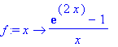
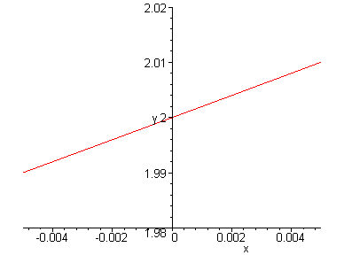

One of the handy things that maple can do is that it will let you define your own
functions. Suppose, for example, that I was doing problem 20. My first step
would be to define the function f that the problem gives me. The following
Maple command will define the function for me:
> f:= x -> ( exp(2*x) - 1 )/x;

Notice that it's ":=" not plain old "=" that defines a function. I can then use
maple to tell me the value of f(x) for lots of different x's. To get maple to
evaluate f(x), I need to use the evalf command. Evalf stands for Floting
point EVAL. Floating point means a decimal number, like 3.1415, instead
of a symbol like Pi.
> evalf( f(1) );
> evalf (f(.1));
> evalf( f(.01) );
> evalf( f(.001) );
> evalf( f(.0001) );
Etc. etc. I can also get maple to plot my function for me.
> plot( f(x), x=-.005..(.005), y=1.98..2.02);

You could do all of this on a graphing calculator. But I think Maple is much more fun.
And I bet it's also faster. When you're done Maple-ing, you can just print out your
work -- you don't need to copy stuff over.